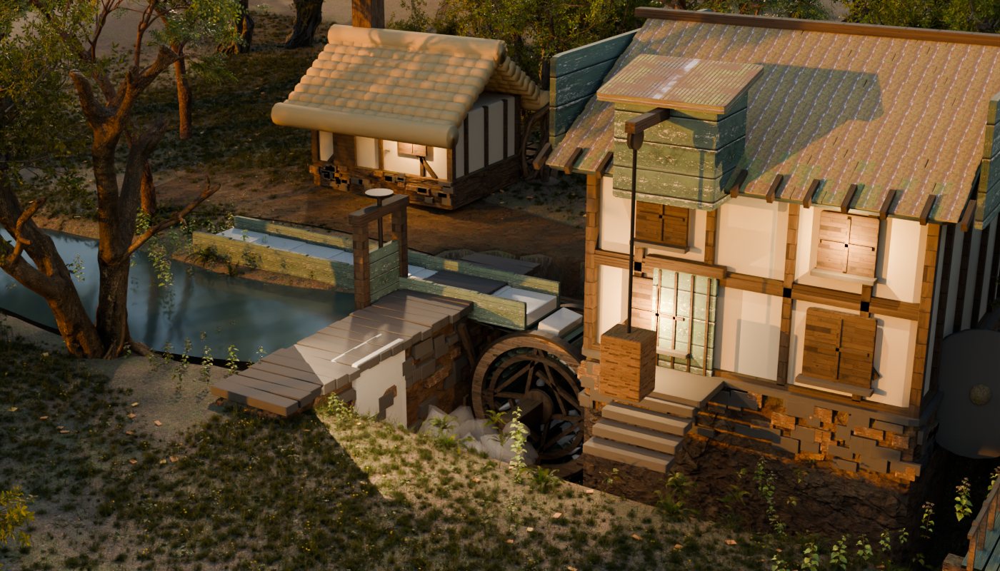
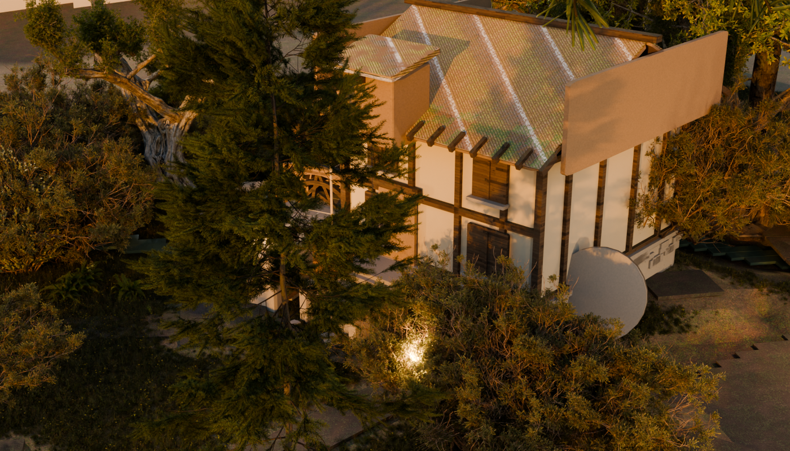
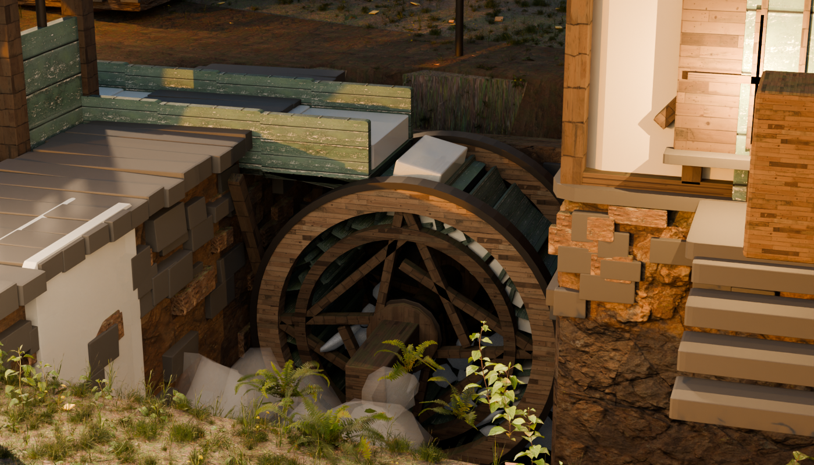
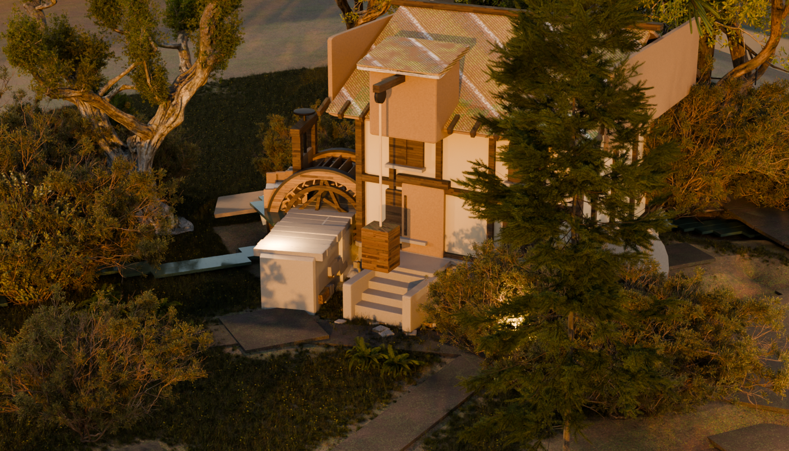
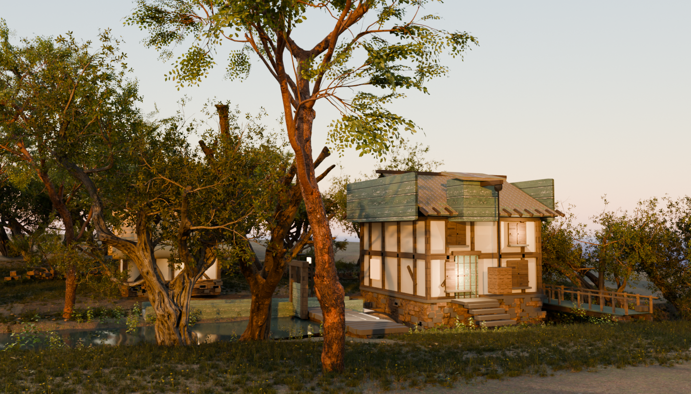
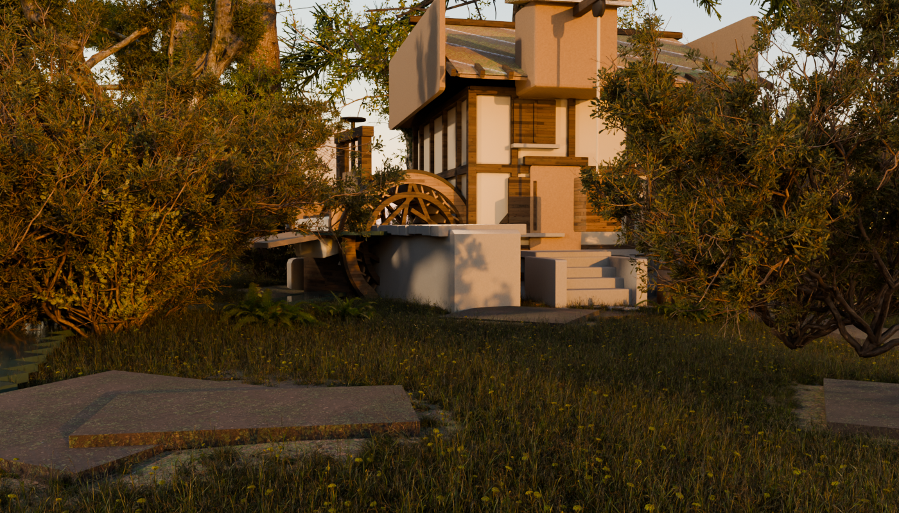
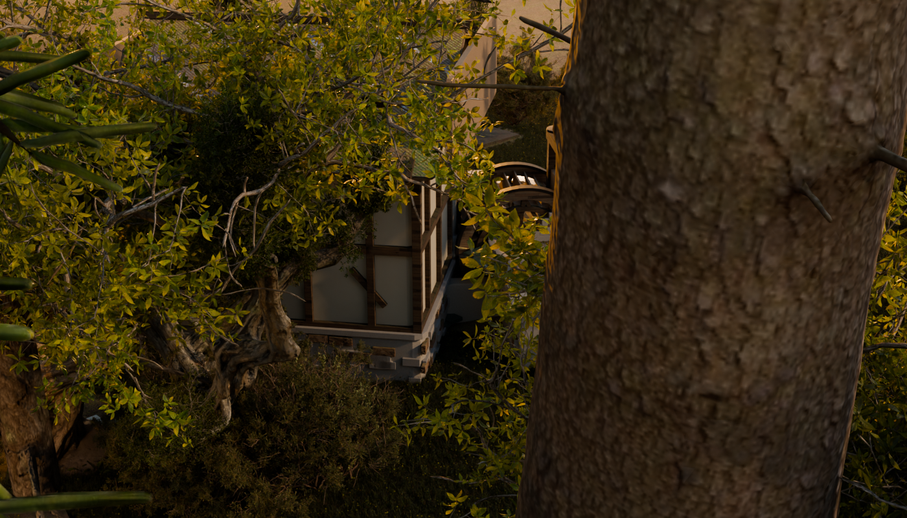
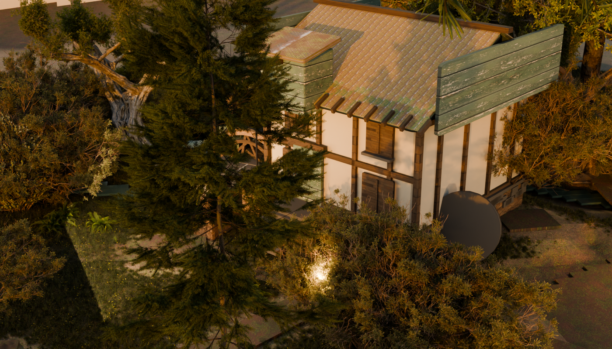
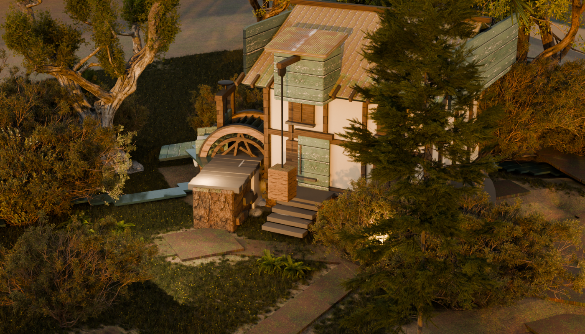
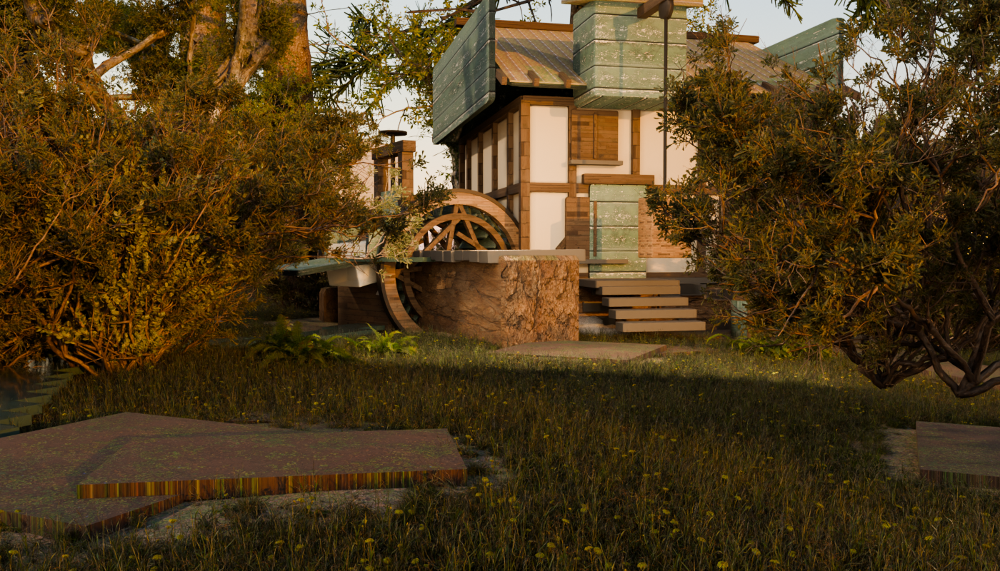

Left: probe2-*.png, the hand-authored throwaway the user ratified as the quality bar.
Right: dress3-*.png, the same corner produced by tools/emb_dress.py — derived from
emberbrook.map.json + the ratified blockout's own as-built placements + lane A's shipped
asset library, deterministic, gated. Same golden legibility key, same three framings mapped through
the mill's own local frame so the cameras stand in the same place relative to the wheel.
These frames are GATE ROUND 3, built against round 2's five redlines R1–R5. The ground
blocker from round 1 stays closed and the ground stays at the bar; what changed this round is the
BUILT STRUCTURES, and the section below names every object that was wrong, what it was supposed to
be, and the instrument that found it. dress2-*.png — the round-2 frames the redlines were
written against — are kept at the foot of the page so the change is visible rather than asserted.






Round 2 failed on the built structures. Every offending object was NAMED before anything was
changed, with a ray census through the pilot's own cameras (one ray per screen sample, marching past
anything with hide_render set) plus a false-colour ID map. What each thing is, and why
it looked like that:
| What the gate saw | The objects, named | What it is supposed to be | Cause |
|---|---|---|---|
| Flat blue-green boards on the roof edge and gable (a); on the gable and beside the door (b/c) | emb_dress_mill_gable±1 (4.2% of frame a),
emb_dress_mill_lucam (1.9%), emb_dress_mill_roofdeck±1,
emb_dress_mill_door |
the gable barge-boards, the lucam (the hoist gantry over the door), the roof deck, the door | All built with PLANK, which resolved to Dellhollow's
mat_wallwood — a PAINTED limewashed blue-green cottage weatherboard. Right on a
cottage, wrong on a working mill, and it was on every board this build makes. |
| Spindly wheel, no legible launder, a raw silver slab over the feed | emb_dress_buckA/B**, emb_dress_leat_floor/wl/wr/nose |
the wheel's own bucket boards; the launder's floor, side boards and nose | |
| Smooth cork-like block for the pit | emb_dress_pit±1, emb_dress_mill_foot |
the wheel-pit walls and the mill's stone plinth | Dellhollow's stone materials are authored against Dellhollow's UNWRAPS, and every primitive this file builds carries no UV layer at all — so a 5.6 m pit wall took one smeared sample. |
| Rainbow-striped tread side faces | walk_* ribbons and pads via emb_dress_lane |
the town's own walk network — the lanes and doorsteps | MY BUG from the previous round: I multiplied the albedo by a Noise Texture's Color output, which is RGB noise and not a scalar, so it tinted per channel; and a single planar sample smeared it down Z on every side face. |
| Floating stair slabs | emb_dress_mill_step0..3 |
the flight up to the mill door | four 0.22 m slabs dropping 0.28 m each — a 0.06 m gap under every tread and nothing under the flight at all. |
THE COMMON ROOT, AND WHY probe2 COULD NOT HAVE SHOWN IT. Most of the above is one mistake
wearing two hats: an appended material needs a COORDINATE and a colour that suit the geometry it
lands on, and nothing checked either. The ratified probe2 blend never appended Dellhollow's
materials at all — its M() fell through to flat fallback colours — so the bar was shaded
on plain warm albedo, and neither the missing UV nor the painted board could ever appear in it. The
engine inherited the material NAMES and the coherence ruling without inheriting a way to test them.
| Redline | What was done |
|---|---|
| R1 boards | The mill's boarding is now emb_dress_boarding, built here: the
probe's own warm brown (0.38, 0.26, 0.16) with a sawn grain stretched along the board and a
bump, in object metres. Dellhollow's painted board is left untouched and still available where
paint is right. |
| R2 wheel / pit / feed PART-CLOSED |
The probe's recipes are already ported and structurally intact
— solid shroud rings, iron strakes, buckets held INSIDE the shroud line, the inner band, the
coursed pit rubble, the hurst beam the axle rides on, the head gate and its screw. What was
missing was the coordinate and the colour. Every appended material's image textures are
re-seated on GEOMETRY POSITION with BOX projection at a metre scale (box projection needs no
UVs by construction). mat_grass, mat_rope and
mat_whitewater drive their colour from a VERTEX_COLOR node, which returns a constant
on geometry carrying no colour attribute — those take the probe's own flat colour for the role
instead, which is what closes the raw white sheet over the feed.
THE WHEEL NOW READS AS A WHEEL in b and c — a spoked disc inside its shroud, with the
launder arriving at axle height. THE STONE DOES NOT REACH THE BAR, and the section
“the stone is still hot” below measures exactly how far short and proves the lever
that would close it is NOT albedo. |
| R3 tread sides | Noise Fac, not Color; BOX projection on the
tread image; the noise remapped to a narrow 0.74–1.06 multiplier so it breaks the wash
without tinting it. |
| R4 stairs | Each tread is now a riser block carried down to the ground beneath it (measured with the build's own ground ray-cast, so it seats on real terrain), plus two side cheeks and an apron of stones at the foot. |
| R5 water | The pond and dam ARE dressed — water_emb_millpond is the
blockout's own searched impoundment re-materialed, and the dam wall, cope stones, spill sheet,
plunge foam and mist are built. Whether they are IN FRAME is the bearing question below. |
Measured on the gate frames themselves with a matched crop over the pit-and-plinth mass
(dress3-b.png, box 470,400–620,545) against probe2-b.png's dressed
stone (980,340–1180,560), luminance as 0.2126R+0.7152G+0.0722B on the 8-bit frame:
| Surface | L | sd | vs the bar |
|---|---|---|---|
| probe2-b dressed stone — THE BAR | 99.7 | 30.1 | — |
| dress3-b pit/plinth mass, stone albedo ×1.00 | 134.6 | 54.1 | +35% |
| dress3s-b, the same build with stone albedo ×0.74 | 121.7 | 52.8 | +22% |
Two points solve the line: L = 84.9 + 49.7 × scale. There is an ADDITIVE FLOOR near L = 85 that no albedo reaches past; landing the bar by albedo alone would need ×0.297, i.e. a near-black stone, which is a hack and not a fix. This is the SAME instrument reading that found the pit fill last round — and it is the same reading AFTER the pit fill was removed, so the pit fill was one additive term and not the only one. Round 3's claim that zeroing it landed the stone at L = 99.2 was measured on the round-2 frame, not on this build's own gate frame; on the gate frame it does not hold, and that correction is the point of re-measuring in the frame that is actually being judged.
The consequence is the reading, not just the level: near AgX's shoulder the contrast between a
rubble stone and the wall behind it collapses, so the individually placed stones — which ARE built,
and are 10–13 px across at frame b's 54.5 m and 32° lens, so they are big enough to see —
wash out and the plinth reads as the plain pale mass the last round predicted. --stonescale
is in the engine as the lever and is DEFAULTED TO 1.00 on purpose: 0.74 is reported as insufficient
rather than shipped, and shipping it would also mean the committed engine no longer reproduces the
committed gate frames. Naming the remaining additive term is the next redline, and it is a
measurement this lane has not yet made. An --idmap screen census (one ray per cell
of a 140×80 grid, first RENDERED hit per cell, marching past hide_render) is in
the engine to name the pale mass object-by-object; its run was cut for time before this gate and is
the first thing to run next round.
The previous round ended with the ground rendering a hard-edged white-and-black angular pattern across the whole corner, with the textures ruled in (2048² — in fact lane A ships them at 1024² — valid JPEG, paths resolving), the grass scatter ruled out, and no missing image. Every one of those checks was correct and none of them could have found it, because the defect was not in the material at all.
Bisection: a minimal scene — one UV-less plane, one copy of the ground material, four
variants (normal map / no normal / bump / with UVs) — rendered CLEAN in all four. So the
material was exonerated on an instrument, and the search moved into the built scene. There the probe
found an object called emb_dress_scatter_ground: 12 864 polygons, no material
at all, hide_render = False, and a world matrix identical to
emb_ground_valley's.
It was Z-FIGHTING. The grass emitter is a COPY of the region's own ground faces (that copy
is what made the requested particle count land inside the region). It is meant never to render. The
line that said so was ParticleSettings.use_render_emitter = False — a property
that does not exist in Blender 5.1; it raised AttributeError into a fallback that
set hide_render = False, the wrong property AND the wrong value. So a material-less
duplicate of the ground rendered exactly coplanar with the dressed ground, Cycles' depth tie broke
per triangle, and the corner filled with hard-edged patches of Blender's default grey against the
scanned soil. That is why it survived the scatter being cut to 200 clumps: the copy is made whatever
the count is.
Fixed with the live property, Object.show_instancer_for_render = False, and the
try/except is gone: if this moves again the build fails rather than renders a duplicate.
An assert holds it.
| Thing | Was | Now | The measurement |
|---|---|---|---|
| Groundcover density | 260 000 requested | 700 clumps/m² of full-weight ground | A count is not a density, for the SECOND time by a different mechanism. Blender scatters
count over the emitter's whole surface and only then culls each particle by the
vertex weight under it, so the landed number is count × mean weight. Measured
here: 1307 m² of the emitter's 3232 m² carries weight, mean weight 0.40 — so
260 000 landed about 105 000 and the probe's density quietly became two fifths of
itself. The knob is now a density; requested and landed are both printed and never conflated. |
| How 700 was chosen | — | swept | One build, one camera, three renders at 200 / 420 / 700, compared on matched native-pixel ground crops. 200 still shows substrate between tufts; 420 closes most of it; 700 reads as continuous turf with the dandelion heads probe2-c has. |
| Trodden bare ground | 2.20 m off any tread, 6.50 m off every doorstep, compounding | 1.30 m and 3.20 m, NEAREST doorstep only | This corner carries 162 walk meshes. The suppression was applied once per pad in range, so four pads at 5 m compounded to 0.13× on ground nobody walks on — which is most of what read as “desert”. |
| The treads themselves | value 0.62, one flat wash per slab | value 0.42, broken by an object-space noise | A tread is worn earth, not a paving slab. At 0.62 the 162 treads rendered as pale pink rectangles with their own hard edges drawn. The walk network is NOT touched — material only, no vertex moves, so every tread is the one walk QA already measured. |
| Frame c's camera | underground | seated | The probe's −6° elevation is an angle over a ground its throwaway invented flat at zero. Through the 27.1 m standoff here it seats the camera at z 0.38 against a ground of 2.52 — under it — and the frame rendered black with one beam across it. The camera is now seated at the town's ground plus the probe's own 1.80 m eye height, z 4.32. The aim does not move: same bearing, same lens. |
| Thing | probe2 (bar) | dress3 (pilot) | Why |
|---|---|---|---|
| Terrain | invented ground_z(), a clean brook along +x |
the blockout's own emb_ground_valley |
the town's real ground under the real stamped brook, which meanders |
| Mill placement | authored at (10.6, 4.9) from its dam | ON the map's watermill landmark, 7.1 m downstream of the dam and 0.9 m off the leat axis | the map is the authority; the fit is measured and reported, not shopped for |
| Trees | 16 hero placements chosen by eye | the blockout's searched placements, filtered to the region | species read off each crown's own topology; lane clearances re-asserted on the dressed asset |
| Boundaries | one authored dry-stone run | the stamped 29%-partial fragments, re-rendered per household on that household's crc | a boundary is the blockout's; dressing only changes what it is made of |
| Groundcover | fractal density, trodden at an authored door | same field, trodden at the town's OWN treads and doorsteps | bare ground appears where the walk network actually is |
| The launder | ~12 m of trestled boarding | 2.0 m | the blockout's millpond stands 7.1 m from the mill, so once the wheel is against its own wall there is almost nothing left to span. The probe's twelve metres measured the throwaway's invented layout. If the frame wants the long-launder charm the lever is a millpond nudge in the MAP, and that is a map stamp for the coordinator, not a thing this lane moves. |
Frame a's hero is the wheel, and on the probe's own bearing the wheel is behind a tree. This is reported, not fixed, and the reason matters.
Each shot now runs a RAY CENSUS before it renders — the repo's own rule that a bake ray-cast
is the only visibility oracle, applied to the pilot's cameras. It casts from the solved camera to
three named subjects (the wheel, the mill, the dam), marches past anything with
hide_render set (the census's first version reported the dam blocked by
lm_hillside-cottage_roof, a roof that does not render — a census that counts
invisible occluders is worse than none), and NAMES what it hits.
And it is a BUNDLE, not a ray — that correction was paid for in a frame. The first version cast one ray per subject and reported frame a's wheel CLEAR; the render showed the wheel almost entirely behind a conifer. The ray had threaded a gap in an alpha-card canopy: a true measurement of the wrong thing, the same family as the pink-plank confabulation, and worse than no measurement because it had already moved the camera. Each subject is now sampled by nine rays over a disc of its own radius and the answer is a clear FRACTION.
| Frame | Standoff | the wheel | the mill | the dam | Verdict |
|---|---|---|---|---|---|
| a — as-mapped | 42.9 m (kept) | 22% | 89% | 22% | wheel occluded by fir_tree_01 at 16.4 m of 43.3 — but the
MILL reads |
| a — mirrored (the ruling) | 42.9 m | 44% | 11% | 33% | wheel better, MILL LOST behind island_tree_02 at 21.5 m of
39.9 |
| b | 54.5 m (kept) | 100% | 56% | 100% | hero clear; the mill's own disc is partly behind the same stand |
| c | 27.1 m, camera SEATED | 78% | 78% | 78% | the frame that was black is now a frame |
The coordinator ruled option (i): mirror the bearing to the pond side rather than accept the rim conifer across the wheel, with a stated fallback — if the pond side has its own blocker, census and fall back to accept-the-conifer. It does, so both hands are shown here as PICTURES and not only as numbers. Mirroring is not a new composition: it is the same +107° off the same house-to-wheel axis, taken on the other hand. No tree was moved and no map was restamped.

The engine renders whichever hand it is told to (--forcehand a=mirror|asmapped).
Left unforced it censuses both and takes the ruled mirror only if the hero clears the 60% a hero
needs; neither hand does, so it resolves to the stated fallback and says so in the log. A threshold
that rejects both hands would otherwise resolve silently, and the coordinator would be ruling on one
picture of a two-picture question. The page shows both; the call is the coordinator's.
The camera is allowed to walk in along its own bearing — same azimuth, same elevation, same lens — but the walk must EARN itself: bounded at 0.88×, and accepted only if it lifts the hero's clear fraction by 25 points. On frame a it lifts it 22% → 33%, so the probe's standoff is KEPT and the occlusion is reported instead. No tree is moved. These are the blockout's searched placements and this lane does not get to shop for a picture by deleting the town's trees — nor by walking the camera until something happens to be visible.
The question for the coordinator, now answered as far as this lane can answer it.
The throwaway had open water on this bearing because it invented its own layout; this town has a rim
stand there. Option (1), mirror to the pond side, was RULED, built and rendered — see the bearing
section above; it trades the mill for the wheel and the picture is worse. Option (2), accept the tree
as the town's own foreground, is what dress3-a shows. Option (3) is a map-level change to
the rim stand and remains yours alone. This lane has moved no tree and restamped no map.
These are dress2-*.png, the frames the five redlines were written against. The
blue-green painted boarding on the gable, roof edge and launder, the pale ribbons on the ground, the
floating stair slabs and the smeared pit are all in them.



The mill building itself — timber frame, laid shingle courses with mossy eaves, the lucam and hoist, the plinth rubble, the stone steps; the 4.4 m BREASTSHOT wheel in its pit, fed at axle height on the map's re-ruled 2.73 m fall; the pond and its embankments, which are the blockout's own searched impoundment RE-MATERIALED rather than re-invented; the ground mud/turf mixed from the water's edge as a margin rather than an altitude; the gray proxies hidden, because dressing REPLACES. Determinism: two runs, identical content digest. Double-instancing gate: one representation per asset, measured with the same instrument on both sides.